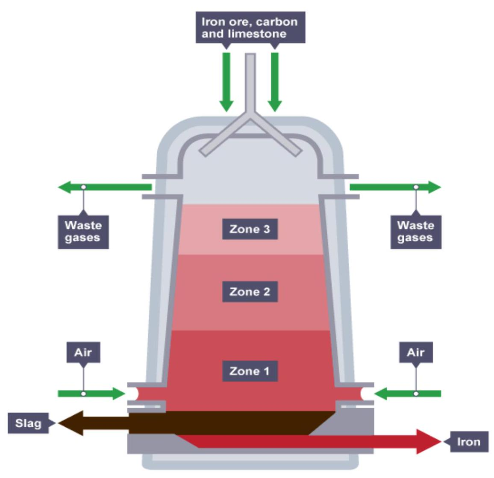
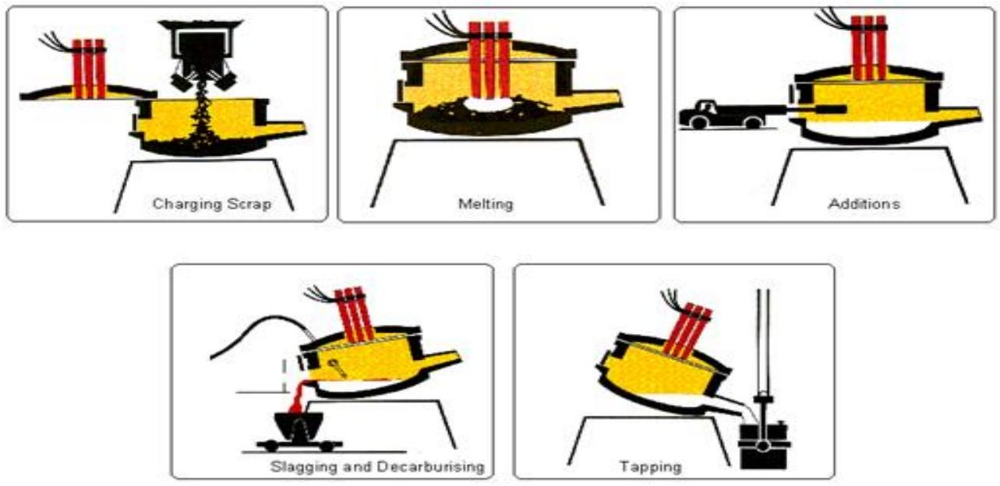
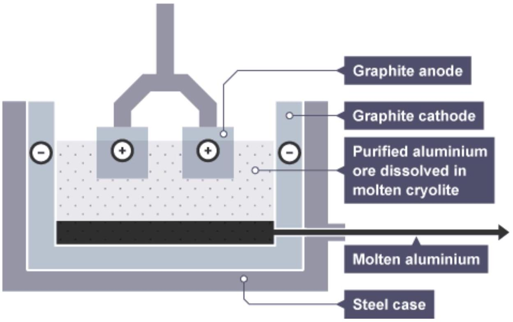
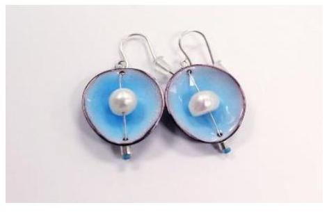
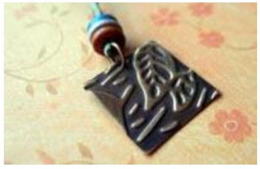
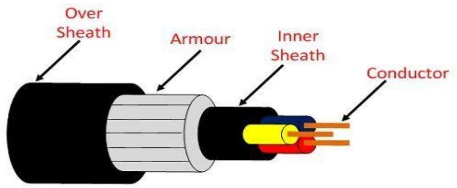

TOPIC 2: MATERIALS AND PROCESSES.
2.1 Metals and non-metals.
a. Metals:
Metals are opaque, lustrous elements that are good conductors of heat and electricity. Most metals are malleable and ductile and are, in general, denser than the other elemental substances.
b. Non-metals:
A non-metal is an element that is generally a poor conductor of heat and electricity. Most properties of nonmetals are the opposite of metals.
c. Alloys.
An alloy is a mixture composed of two or more elements, at least one of which is a metal.
Examples of common alloys:
- Steel: A combination of iron (metal) and carbon (non-metal)
- Bronze: A combination of copper (metal) and tin (metal)
- Brass: A mixture of copper (metal) and zinc (metal)
d. Ferrous and non-ferrous metals.
Ferrous metals contain iron and non-ferrous metals do not contain iron.
Which Metals Are Ferrous?
Some common ferrous metals include alloy steel, carbon steel, cast iron and wrought iron. These metals are prized for their tensile strength and durability. Carbon Steel - also known as structure steel - is a staple in the construction industry and is used in the tallest skyscrapers and longest bridges. Ferrous metals are also used in shipping containers, industrial piping, automobiles, railroad tracks, and many commercial and domestic tools.
Ferrous metals have a high carbon content which generally makes them vulnerable to rust when exposed to moisture. There are two exceptions to this rule: wrought iron resists rust due to its purity and stainless steel is protected from rust by the presence of chromium.
Most ferrous metals are magnetic which makes them very useful for motor and electrical applications.
Steel:
Steel is made by adding iron to carbon which hardens the iron. Alloy steel becomes even tougher as other elements like chromium and nickel are introduced. Steel is made by heating and melting iron ore in furnaces. The steel can is tapped from the furnaces and poured into molds to form steel bars. Steel is widely used in the construction and manufacturing industries.
Carbon Steel:
Carbon steel has a higher carbon content in comparison to other types of steel making it exceptionally hard. It is commonly used in the manufacturing of machine tools, drills, blades, taps, and springs. It can keep a sharp cutting edge.
Alloy Steel:
Alloy steels incorporate elements such as chromium, nickel and titanium to impart greater strength and durability without increasing weight. Stainless steel is an important alloy steel made using chromium. Alloy steels are used in construction, machine tools, and electrical components.
Cast Iron:
Cast iron is an alloy made from iron, carbon, and silicon. Cast iron is brittle and hard and resistant to wear. It's used in water pipes, machine tools, automobile engines and stoves.
Wrought Iron:
Wrought iron is an alloy with so little carbon content it's almost pure iron. During the manufacturing process, some slag is added which gives wrought iron excellent resistance to corrosion and oxidation, however, it is low in hardness and fatigue strength. Wrought iron is used for fencing and railings, agricultural implements, nails, barbed wire, chains, and various ornaments.
Which Metals Are Non-Ferrous?
Non-ferrous metals include aluminum, copper, lead, zinc, and tin, as well as precious metals like gold and silver. Their main advantage over ferrous materials is their malleability. They also have no iron content, giving them a higher resistance to rust and corrosion, and making them ideal for gutters, liquid pipes, roofing, and outdoor signs. Lastly, they are non-magnetic, which is important for many electronic and wiring applications.
Aluminum:
Aluminum is lightweight, soft, and low strength. Aluminum is easily cast, forged, machined, and welded. It's not suitable for high-temperature environments. Because aluminum is lightweight, it is a good choice for the manufacturing of aircraft and food cans. Aluminum is also used in castings, pistons, railways, cars, and kitchen utensils.
Copper:
Copper is red in color, highly ductile, malleable and has high conductivity for electricity and heat. Copper is principally used in the electrical industry in the form of wire and other conductors. It's also used in sheet roofing, cartridge cases, statutes, and bearings. Copper is also used to make brass, an alloy of copper and zinc.
Lead:
Lead is a soft, heavy, malleable metal with a low melting point and low tensile strength. It can withstand corrosion from moisture and many acids. Lead is widely used in electrical power cables, batteries, building construction and soldering.
Zinc:
Zinc is a medium to low strength metal with a very low melting point. It can be machined easily, but heating may be required to avoid cleavage of crystals. Zinc is most widely used in galvanizing, the process of applying a protective zinc coating to iron or steel to prevent rust.
Tin:
Tin is very soft and malleable, ductile with low tensile strength. It's often used to coat steel to prevent corrosion. Tinplate steel is used to make tin cans to hold food. In the late 19th century, tin foil was commonly used to wrap food products, but has since largely been replaced by aluminum foil. Tin can also be alloyed with copper to produce tin brass and bronze.
2.2 Properties of materials.
Physical properties are measurable. Those are things like density, melting point, conductivity, coefficient of expansion, etc. Mechanical properties are how the metal performs when different forces are applied to them. That includes things like strength, ductility, wear resistance, etc. The mechanical and physical properties of materials are determined by their chemical composition and their internal structure, like grain size or crystal structure.
a. Conductivity:
Thermal conductivity is a measure of the quantity of heat that flows through a material.
b. Corrosion Resistance:
Corrosion resistance describes a material's ability to prevent natural chemical or electrochemical attack by atmosphere, moisture or other agents.
c. Density:
Density, often expressed as pounds per cubic inch, or grams per cubic centimeter, etc., describes the mass of the alloy per unit volume. The density of the alloy will determine how much a component of a certain size will weigh.
d. Ductility:
Ductility is the ability of a material to deform plastically (that is, stretch) without fracturing and retain the new shape when the load is removed. Think of it as the ability to stretch a given metal into a wire. (Tensile stress)
e. Malleability:
A physical property describes a metal's ability to be formed without breaking. Pressure, or compressive stress, is used to press or roll the material into thinner sheets. A material with high malleability will be able to withstand higher pressure without breaking. (Compressive stress)
f. Elasticity:
Elasticity describes a material's tendency to return to its original size and shape when a distorting force is removed. As opposed to materials that exhibit plasticity (where the change in shape is not reversible), an elastic material will return to its previous configuration when the stress is removed.
The stiffness of a metal is the ability of an object to resist deformation in response to an applied force; rigidity; complementary to flexibility
g. Toughness:
It is the ability of a material to absorb the energy and gets plastically deformed without fracturing.
h. Hardness:
Hardness is defined as a material's ability to resist permanent indentation (that is plastic deformation). Typically, the harder the material, the better it resists wear or deformation. The term hardness, thus, also refers to local surface stiffness of a material or its resistance to scratching, abrasion, or cutting.
i. Plasticity:
Plasticity, the converse of elasticity, describes the tendency of a certain solid material to hold its new shape when subjected to forming forces. It is the quality that allows materials to be bent or worked into a permanent new shape. Materials transition from elastic behavior to plastic at the yield point.
j. Strength:
It is the property of a material which opposes the deformation or breakdown of material in presence of external forces or load.
k. Tensile Strength:
Tensile strength refers to the amount of load a section of metal can withstand before it breaks.
l. Toughness:
Toughness represents a material's ability to absorb impact without fracturing at a given temperature.
m. Wear Resistance:
Wear resistance is a measure of a material's ability to withstand the effect of two materials rubbing against each other. This can take many forms including adhesion, abrasion, scratching, gouging, galling, and others.
n. Brittleness:
Brittleness of a material indicates that how easily it gets fractured when it is subjected to a force or load. When a brittle material is subjected to a stress it observes very less energy and gets fractures without significant strain. Brittleness is converse to ductility of material. Brittleness of material is temperature dependent. Some metals which are ductile at normal temperature become brittle at low temperature.
2.3 Extraction Process.
a. Extraction of Iron.
The blast furnace.
Iron is extracted from iron ore in a huge container called a blast furnace. Iron ores such as haematite contain iron(III) oxide, $\mathrm{Fe}_{2} \mathrm{O}_{3}$.
The oxygen must be removed from the iron(III) oxide to leave the iron behind. Reactions in which oxygen is removed are called reduction reactions.
Carbon is more reactive than iron, so it can displace iron from iron(III) oxide. Here are the equations for the reaction:
Iron(III) oxide + carbon $\rightarrow$ iron + carbon dioxide
In this reaction, the iron(III) oxide is reduced to iron, and the carbon is oxidised to carbon dioxide. In the blast furnace, it is so hot that carbon monoxide can be used, in place of carbon, to reduce the iron(III) oxide:
iron(III) oxide + carbon monoxide $\rightarrow$ iron + carbon dioxide
The calcium carbonate in the limestone thermally decomposes to form calcium oxide.
calcium carbonate $\rightarrow$ calcium oxide + carbon dioxide
The calcium oxide then reacts with silica (sand) impurities in the haematite, to produce slag which is calcium silicate.
calcium oxide + silica $\rightarrow$ calcium silicate
Raw materials for the reaction
| Raw material | Contains | Function |
|---|---|---|
| Iron ore (haematite) | Iron(III) oxide | A compound that contains iron |
| Coke | Carbon | Burns in air to produce heat, and reacts to form carbon monoxide (needed to reduce the iron oxide) |
| Limestone | Calcium carbonate | Helps to remove acidic impurities from the iron by reacting with them to form molten slag |
| Air | Oxygen | Allows the coke to burn, and so produces heat |
In summary:
The blast furnace operates at $1900^{\circ} \mathrm{C}$ in order to smelt iron from iron ore. To attain that temperature, coke (and not coal) is used as fuel, and the fire inside the furnace is fanned with hot air at $1200^{\circ} \mathrm{C}$ to $1300^{\circ} \mathrm{C}$ degrees. Lime is added as an additional component; it binds contaminants. The blast furnace is fed from the top, so that alternating layers of coke and iron ore are formed. The highest temperature occurs in the lower part of the furnace. The liquid iron, on which the slag floats, collects at the base.
b. Extraction of steel.
The basic raw material for steel manufacture is either the hot metal from the blast furnace, steel scrap or a mixture of both. The proportions of material used vary according to the process and the type of steel required. Steel can be described in general terms as iron with most of the carbon removed, to make it tougher and more ductile. There are many forms (grades) of steel, each with its own specific chemical composition and properties to meet the needs of the many different applications.
Electric arc furnace method of making steel:
The electric arc furnace consists of a circular bath with a movable roof, through which three graphite electrodes can be raised or lowered. At the start of the process, the electrodes are withdrawn, and the roof swung clear. The steel scrap is then charged into the furnace from a large steel basket lowered from an overhead travelling crane. When charging is complete, the roof is swung back into position and the electrodes lowered into the furnace. A powerful electric current is passed through the charge, an arc is created, and the heat generated melts the scrap. Lime and fluorspar are added as fluxes and oxygen is blown into the melt. As a result, impurities in the metal combine to form a liquid slag.
c. Extraction of aluminium.
Aluminium is the most abundant metal on Earth, but it is expensive, largely because of the amount of electricity used in the extraction process.
Aluminium ore is called bauxite ($\mathrm{Al}_{2} \mathrm{O}_{3}$). The bauxite is purified to yield a white powder aluminium oxide (also known as alumina) - from which aluminium can be extracted.
The extraction is done by electrolysis, but first the aluminium oxide must be melted so that electricity can pass through it. However, aluminium oxide has a very high melting point (over $2,000^{\circ} \mathrm{C}$) so it would be expensive to melt it.
Instead, it is dissolved in molten cryolite - an aluminium compound with a lower melting point than aluminium oxide. The use of molten cryolite as a solvent reduces some of the energy costs involved in extracting aluminium by allowing the ions in aluminium oxide to move freely at a lower temperature.
A steel case is lined with a graphite cathode and filled with purified aluminium ore dissolved in molten cryolite. Graphite anodes are inserted, and molten aluminium is drawn off from the bottom.
The diagram shows an aluminium oxide electrolysis cell. Both the negative electrode (cathode) and positive electrode (anode) are made of graphite, which is a form of carbon.
Aluminium ions receive electrons at the negative electrode and are reduced to aluminium atoms:
The molten aluminium sinks to the bottom of the cell, where it is tapped off.
Oxide ions lose electrons at the positive electrodes and are oxidised to oxygen gas:
This oxygen reacts with the carbon of the positive electrodes, forming carbon dioxide, so they gradually burn away. As a result, the positive electrodes have to be replaced frequently. This adds to the cost of the process.
d. Extraction of copper:
- Mining: The ore is removed from the ground in either open pit or underground mines. Underground - sinking a vertical shaft into the earth to reach the copper ore and driving horizontal tunnels into the ore. Open-pit - $90 \%$ of ore is mined using the open pit method. Ores near the surface can be quarried after removal of the surface layers.
- The ore: An ore is a rock that contains enough metal to make it worthwhile extracting.
- Grinding: The ore is crushed, then ground into powder.
- Concentrating: The ore is enriched using a process called froth flotation. Unwanted material (called gangue) sinks to the bottom and is removed.
- Roasting: This is where the chemical reactions start. The powdered, enriched ore is heated in air between $500^{\circ} \mathrm{C}$ and $700^{\circ} \mathrm{C}$ to remove some sulphur and dry the ore, which is still a solid called calcine.
- Smelting with fluxes: A flux is a substance which is added to the ore to make it melt more easily. The solid calcine is heated to $1200^{\circ} \mathrm{C}$ and melts. Some impurities are removed forming a matte (a mixture of liquid copper and iron sulphide).
- Conversion of matte: Air is blown into the liquid matte forming blister copper, so called because the gas bubbles trapped in the solid form blisters on the surface.
- Anode casting: The blister is cast into anodes for electrolysis.
- Electrolytic refining: The copper is purified to $99.99 \%$ by electrolysis. The production route described above shows the progression from a rock containing about $0.2 \%$ copper to a copper cathode of 99.99% purity.
e. Bronze.
Bronze is one of the earliest metals known to man. It is defined as an alloy made of copper and another metal, usually tin. Compositions vary, but most modern bronze is 88% copper and 12% tin. Bronze may also contain manganese, aluminum, nickel, phosphorus, silicon, arsenic, or zinc.
f. Plastics.
Plastics are derived from natural, organic materials such as cellulose, coal, natural gas, salt and, of course, crude oil. Crude oil is a complex mixture of thousands of compounds and needs to be processed before it can be used.
The production of plastics begins with the distillation of crude oil in an oil refinery. This separates the heavy crude oil into groups of lighter components, called fractions. Each fraction is a mixture of hydrocarbon chains (chemical compounds made up of carbon and hydrogen), which differ in terms of the size and structure of their molecules. One of these fractions, naphtha, is the crucial compound for the production of plastics.
Two main processes are used to produce plastics - polymerisation and polycondensation - and they both require specific catalysts. In a polymerisation reactor, monomers such as ethylene and propylene are linked together to form long polymer chains. Each polymer has its own properties, structure and size depending on the various types of basic monomers used. There are many different types of plastics, and they can be grouped into two main polymer families:
- Thermoplastics (which soften on heating and then harden again on cooling).
- Thermosets (which never soften once they have been moulded).
2.4 Finishes and decorative process.
a. Annealing.
This process is carried out to soften the steel so that it may be machined or so that additional cold-working operations such as pressing and bending can be carried out.
b. Lacquering.
Many metals suffer from surface tarnishing and even corrosion, if left open to the atmosphere / air. Surfaces can be protected through the application of different finishes, such as paint or powder coating.
However, sometimes the surface of metals can be attractive without the need for a coloured coating. This is when lacquer is most useful. Lacquer is usually applied as a clear coating, leaving the surface texture on view. Lacquer forms a protective clear layer on metals and is particularly useful on brass, aluminum, silver and copper, which are often in the form of decorative items. When lacquered, polishing and cleaning will no longer be required.
c. Enameling.
Enameling is the process of applying a thin coat of finely ground glass to a metal. When heated to a high temperature, the glass melts and fuses to the metal. Enamels applied to metals produce various color effects. Copper has been the most inexpensive and satisfactory metal for use in enameling. It is easy to cut and shape and offers the fewest problems in fusing the enamels to its surface. Fine or pure silver sheet and gold can be enameled very satisfactorily, but the cost may be prohibitive.
Enameling.
d. Etching.
Etching is a method of using chemicals to cut a design or pattern into a metal surface. Etchant is the chemical (or mixture of chemicals) used to cut into unprotected parts of the metal to create the finished etched design. A resist is what you use to protect certain parts of your metal from the etchant. Resists are typically inks (and tapes).
Etching.
e. Polishing.
Metal polishing is a finishing method that uses an abrasive material to smooth surfaces. When polished, the surfaces of metallic objects are freed of defects and become more reflective and shinier, enhancing their appearance.
Metal polishing can be complemented by buffing, a less harsh method that results in a brighter finish.
Aside from its cosmetic value, metal polishing also serves a practical purpose. Beneath the surface, it removes oxidation from and prevents further corrosion of a metal, significantly prolonging its working life.
More on polishing: The Basics of Metal Polishing (helandermetal.com)
f. Electroplating.
Electroplating is the process of plating one metal onto another by hydrolysis, most commonly for decorative purposes or to prevent corrosion of a metal. There are also specific types of electroplating such as copper plating, silver plating, and chromium plating. Electroplating allows manufacturers to use inexpensive metals such as steel or zinc for most of the product and then apply different metals on the outside to account for appearance, protection, and other properties desired for the product. The surface can be a metal or even plastic.
The Purposes of Electroplating:
- Appearance
- Protection
- Special surface properties
- Engineering or mechanical properties
More on electroplating: Electroplating - Chemistry LibreTexts
g. Coloring.
Chemical coloring of metals is the process of changing the color of metal surfaces with different chemical solutions.
The chemical coloring of metals can be split into two types:
- Electroplating - coating the metal surface with another metal using electrolysis.
- Patination - chemically reacting the metal surface to form a colored oxide or salt.
Chemically coloring a metal is distinct from simply coating it using a method such as gilding or mercury silvering, because chemical coloring involves a chemical reaction, whereas simple coating does not.
More on coloring metals: Chemical coloring of metals - Wikipedia
h. Pickling and cleaning.
Pickling is a metal cleaning process that uses very strong acids to clean the metal of certain types of surface conditions. These conditions include mill scale, oxides, impurities and stains. The solution of acid used when pickling is called the pickling liquor. During the process, the metal is submersed in the pickle liquor for a set amount of time and then removed.
2.5 Electrical materials and application.
a. Conductors and application.
Conductors are the materials or substances which allow electricity to flow through them. They conduct electricity because they allow electrons to flow easily inside them from atom to atom. Also, conductors allow the transmission of heat or light from one source to another.
b. Conductors and application.
Insulators are the materials or substances which resist or don't allow the current to flow through them. Wood, cloth, glass, mica, and quartz are some good examples of insulators. Also, insulators are protectors. They give protection against heat, sound and of course passage of electricity. Furthermore, insulators don't have any free electrons. It is the main reason why they don't conduct electricity.
As insulators resist the flow of electron, they find worldwide applications. Some of the common uses include:
- Thermal insulators, disallow heat to move from one place to another. Hence, we use them in making thermoplastic bottles. They are also used in fireproofing ceilings and walls.
- Sound insulators help in controlling noise level, as they are good in absorbance of sound. Thus, we use them in buildings and conference halls to make them noise-free.
- Electrical insulators hinder the flow of electron or passage of current through them. So, we use them extensively in circuit boards and high-voltage systems. They are also used in coating electric wire and cables.
c. Semi-conductors.
Semiconductor materials such as silicon ($\mathrm{Si}$), germanium ($\mathrm{Ge}$) and gallium arsenide ($\mathrm{GaAs}$), have electrical properties somewhere in the middle, between those of a "conductor" and an "insulator".
They are not good conductors nor good insulators (hence their name "semi"-conductors). They have very few "free electrons" because their atoms are closely grouped together in a crystalline pattern called a "crystal lattice" but electrons are still able to flow, but only under special conditions.
d. Construction of cables.
The power cable mainly consists of three main components, namely, conductor, dielectric, and sheath. The conductor in the cable provides the conducting path for the current. The insulation or dielectric withstands the service voltage and isolates the conductor with other objects. The sheath does not allow the moistures to enter and protects the cables from all external influences like chemical or electrochemical attack, fire, etc.
Electrical Power Cable
e. Cable sizes.
The electrical cables used to power the lights and appliances in your home come in several different cable sizes, primarily to accommodate the amount of current required to run the items that are drawing power from it.
All cables are rated to carry a specific amperage meaning that the load imposed on them should be no more than they are able to safely carry.
The Cable sizes for domestic lighting circuits is usually 1 mm or 1.5 mm twin and earth cable (aka two core and earth). In most cases 1 mm should be fine but depends on how many lights are on the circuit and how long the cable run is.
In most domestic situations the cable size used for sockets on a ring main or radial main is 2.5 mm twin and earth cable.
Aside from the 3 most commonly used cable sizes of $1,1.5$ and 2.5 mm twin and earth there are in fact several other larger sizes of cable that include $4 \mathrm{~mm}, 6 \mathrm{~mm}, 10 \mathrm{~mm}$ and 16 mm . These are mostly used for appliances and objects that require much more electrical power to operate or special use situations. Even larger sizes of cable include 25, 35, 50, 70,95, 120, 150 all the way up to 1000 square mm , over 20 different sizes in total.
The situations in which you would use a larger cable size really depends. As mentioned, appliances such as electric power showers, large cookers, electric car chargers etc will all draw larger amounts of current so will generally require a larger size cable to supply the required current and prevent too much current being drawn which can cause overheating and the potential for the cable to catch fire!
More here: Electric Cable Sizes and Amp Ratings | Electrical Resistance and Cable Rating Tables DIY Doctor
2.6 Metal forming processes.
a. Casting.
Casting is a process that involves pouring liquid metal into a mold, containing a hollow cavity of the desired shape.
b. Forging.
Forging involves shaping metals using localized, compressive forces after heating the metal to a point where it's malleable.
c. Stamping.
Stamping is the process of placing a flat sheet (or coil) of metal into a stamping press, where a tool and die apply pressure to form the metal into a new shape, or cut out a piece of the metal.
d. Foundry work.
Foundry work is the process of making a metal casting of an object by pouring molten metal into a mould.
2.7 Revision Questions.
-
Describe the following finishes and decorative processes:
- Annealing.
- Pickling.
- Electroplating.
-
Explain the following metal forming processes:
- Forging.
- Foundry work.
-
State:
- Two properties of aluminium.
- Three classifications of electrical materials.
- With the aid of a labelled diagram, describe the extraction of iron from its ore.
- i. Explain the term corrosion. ii. List three factors that determine corrosion of metals.
-
Explain the following properties of engineering materials:
- Hardness.
- Malleability.
- Ductility.
- Toughness.
- Conductivity.
- i. State two reasons why 'finishing' is done on an engineering product. ii. Distinguish between lacquering and enamelling finishing processes.
- Describe two techniques of filing.
- Draw a labelled diagram showing the extraction of aluminium by electrolysis.
- With aid of a well labelled diagram, explain the process of electroplating a workpiece.
- Distinguish between 'forging' and 'casting' with reference to metalwork.
- Distinguish between cast iron and wrought iron.
-
State two:
- Properties of copper.
- Applications of rubber.
- i. State four properties of engineering materials. ii. Distinguish between non-metals and alloys giving an example of each.
- Name two copper alloys used in engineering work.
- Distinguish between ferrous and non-ferrous metals.